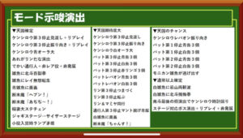

L北斗の拳


[su_spoiler title=”直近差枚CK” style=”fancy” icon=”folder-1″]
| 回数 | ハマリ | BB連 | 消化G | 差枚 |
|---|
直近差枚: 0
使い方
- 行を追加: 「行を追加」ボタンで新しい入力行を追加し、ハマリ欄にカーソル移動。
- 数値入力:
- ハマリ欄: 通常ゲームでの当選（G）入力。
- BB連欄: BBの連チャン数入力。
- 自動計算: 入力変更で直近1300Gの差枚更新。
- 結果確認: 「直近差枚」に表示（プラスは青、マイナスは赤）。
- 下シフト: 「下にずらす」ボタンで行が下にシフト。
- 行削除: 左スワイプで削除。
- 消化G: ハマリ・BB連が空なら「[ - ]」。
狙い目
【リセット】
積極派 120Gから
慎重派 150Gから
前回AT終了時点での直近1300ゲームの差枚で、初当たりやATの純増が変わる仕様と言われてます。
差枚がマイナスほど優遇、プラスなほど冷遇になります。
【リセット以外】
優遇の場合
積極派 470Gから
慎重派 540Gから
冷遇の場合
積極派 540Gから
慎重派 620Gから
不安な方は慎重派の狙い目から30Gほどボーダー上げても良いです。
【朝ニ優遇狙い】
積極派 380Gから
慎重派 440Gから
【北斗優遇即やめ台狙い】
優遇区間だと天国スタート率が上がる？ため、天国判別されてない台を狙う。
天国滞在時のAT当選率は1/100前後と思われるため、機械割120%はありそう。
※シンステージは実践上天国スタート少なめ？普段よりも早めの見切り必要？
※5連以上後は天国スタート少ないため打たない方が良さそう？
・メリット
優遇区間は1でも機械割100%超えるため、ローリスクで天国狙いが出来る。
また、天国滞在率も上がっていると思われる。
・デメリット
モード示唆を把握していないと判別出来ない。
優遇区間でも地獄モードだと期待値マイナス。
・打つ台
AT終了後、優遇区間数ゲームやめの台
・打ち方
ケンシロウ動作演出で第1停止見渡しでやめ。
示唆なくてもリプレイ複数回引いたらやめ。
通常以上示唆出た場合はリプレイ複数回引くまで続行。
天国以上示唆出た場合はリプレイ複数回引いても、第1停止見渡しなど地獄示唆出なければ続行。
中段チェリー引いてAT当選しなかったら基本やめ。
ジャギステージ滞在でも地獄示唆頻発するならやめ。
・天国示唆まとめ
引用元 ヲ猿（YouTube）

やめ時
優遇時 優遇即やめ台狙いを参照。
冷遇時 ジャギステージ以外は即やめでもOK
その他
北斗累積差枚チェッカー
(直近差枚計算ツール)
参考元
期待値見える化だくお 有料 一部無料
リセット天井期待値は無料で見れる
基本情報
- メーカー: サミー
- 機械割: 98.0% 〜 113.0%
- 導入開始日: 2023年04月03日（月）
- ゲーム性概要: サミーのスマスロ第1弾は『スマスロ北斗の拳』。初代の演出やゲーム性が完全再現されているのが最大の特徴で、バトルボーナスを継続させて出玉を増やす仕様となっている。バトルの性能を底上げしてくれるレイ共闘やトキ共闘、継続率94%を誇る無想転生バトルなど、ロング継続に期待できる新要素も追加されているぞ！


打ち方
打ち方・小役
中押し小役狙い
［最初に狙う絵柄］ 中リールに赤7を目押し。取りこぼしを防ぐため、停止順は中→右→左を推奨だ。

［ベル中段停止］ 成立役：ハズレorベルorチャンス目

［赤7中段停止→リプレイテンパイ］ 成立役：リプレイ

［赤7中段停止→リプレイ非テンパイ］ 成立役：角チェリーor中段チェリーorリーチ目役 白BARを目安にチェリーを目押し。チェリーを否定すればリーチ目役だ。

［スイカ中段停止］ 成立役：弱スイカor強スイカorリーチ目役

「レア役の停止形」

「リーチ目役の停止例」

順押し手順
順押し時はスイカの強弱が判別できない、チャンス目とベルこぼしが見分けづらいというデメリットがある。

［順押しリーチ目役の停止例］

強スイカと中段チェリーのA・B
強スイカと中段チェリーは内部的に2種類あり、若干制御が異なる（役割は同じ）。
強スイカと中段チェリーA・Bの制御特徴
| 役 | 特徴 |
|---|---|
| 強スイカA | 中押し時は右リールに9番のスイカ（赤7の下2コマ）を狙うと斜めに揃う（14番だと中段に揃う） |
| 強スイカB | 中押し時は斜めに揃う |
| 中段チェリーA | 基本的に中段チェリーが停止 |
| 中段チェリーB | 左1st時は角チェリーの形から3連チェリーが停止 |
※中段チェリーはどちらも左下段にチェリーをビタ押しすると角チェリーが停止
「強スイカのオススメ判別」 右リールに9番のスイカを狙えば強スイカ時は必ず斜めに揃う。

「中段チェリーのオススメ判別」 中段チェリー時は必ず中段に停止する。

順押し赤7の小役狙い
順押し赤7狙いはスイカの強弱が見抜けなくなり、中段チェリー時に北斗カウンターが発動しない、チャンス目が見抜けない場合がある、リーチ目役成立時にJACを揃えることができる…という特徴がある。 左リールのJACがチェリーの代用になるのでチェリーの取りこぼしはなし。気分転換に最適な打ち方だ。
［最初に狙う絵柄］

［BAR下段停止］ 成立役：ハズレorベルorチャンス目orリーチ目役 チャンス目は中押し時と同じく中＆右リール中段のベル停止だが、ベルこぼし時の一部で同様の出目が停止する場合がある。

［赤7上段停止］ 成立役：リプレイorスイカorリーチ目役

［角JAC停止］ 成立役：角チェリー

［中段JAC停止］ 成立役：中段チェリーorリーチ目役 JACを狙って揃えばリーチ目役だ。

解析情報通常時
小役関連
小役確率
| 設定 | チャンス目 | 弱スイカ | 強スイカ合算 |
|---|---|---|---|
| 1 | 1/179.6 | 1/109.0 | 1/409.6 |
| 2 | 1/179.6 | 1/108.7 | 1/404.5 |
| 4 | 1/179.6 | 1/105.9 | 1/376.6 |
| 5 | 1/179.6 | 1/100.7 | 1/352.3 |
| 6 | 1/179.6 | 1/98.3 | 1/337.8 |
| 設定 | 角チェリー | 中段チェリー合算 | リーチ目役 |
| 1 | 1/109.2 | 1/210.1 | 1/16384.0 |
| 2 | 1/109.2 | 1/204.8 | 1/13107.2 |
| 4 | 1/109.2 | 1/199.8 | 1/10922.7 |
| 5 | 1/109.2 | 1/195.0 | 1/9362.3 |
| 6 | 1/109.2 | 1/190.5 | 1/8192.0 |
強スイカ・中段チェリーの詳細確率
| 設定 | 強スイカA | 強スイカB | 中段チェリーA | 中段チェリーB |
|---|---|---|---|---|
| 1 | 1/546.1 | 1/1638.4 | 1/260.1 | 1/1092.3 |
| 2 | 1/537.2 | 1/1638.4 | 1/252.1 | 1/1092.3 |
| 4 | 1/489.1 | 1/1638.4 | 1/244.5 | 1/1092.3 |
| 5 | 1/448.9 | 1/1638.4 | 1/237.4 | 1/1092.3 |
| 6 | 1/425.6 | 1/1638.4 | 1/230.8 | 1/1092.3 |
※強スイカA…打ち方によって弱スイカと同じ停止形をとる ※中段チェリーB…左1st時は角チェリーから3連チェリーの形をとる
レア役合算確率
| 設定 | 確率 |
|---|---|
| 1 | 1/32.09 |
| 2 | 1/31.89 |
| 4 | 1/31.33 |
| 5 | 1/30.55 |
| 6 | 1/30.09 |
内部状態関連
内部状態一覧
| 状態 | レア役時のBB期待度 |
|---|---|
| 地獄 | 低 |
| 通常 | ↓ |
| 天国 | 高 |
内部状態アップ期待度
| 役 | アップ期待度 |
|---|---|
| 角チェリー | 低 |
| 弱スイカ | ↓ |
| チャンス目 | ↓ |
| 強スイカ | ↓ |
| 中段チェリー | 高 |
※リーチ目役はBB濃厚
内部状態がアップするほど レア役成立時のBB（バトルボーナス）当選率がアップ 。これまでのシリーズと同じく、中段チェリーの期待度は天国時なら100%、地獄時でも25%で当選する。 転落抽選はリプレイ時におこなわれる。
設定変更・BB終了後の内部状態移行率
高設定は設定変更（リセット）後やBB終了後に天国へ移行しやすい。
［地獄滞在時］成立役ごとの抽選
| 役 | 抽選 |
|---|---|
| リプレイ | まれに通常へ移行 |
| 押し順ベル・ ハズレ（1枚役）など | まれに通常へ移行 |
| ナビ付きの押し順ベル | 約25%で天国へ移行 |
| 弱スイカ | 約33%で通常以上へ |
| 強スイカ | 必ず通常以上へ |
| 角チェリー | 通常以上へ移行する可能性あり |
| 中段チェリー | 約25%でBB、非当選時は必ず通常以上へ |
| チャンス目 | 約25%で通常以上へ |
| リーチ目役 | BB当選 |
［通常滞在時］成立役ごとの抽選
| 役 | 抽選 |
|---|---|
| リプレイ | 11.72%で地獄に転落、 まれに天国移行、極々まれにBB当選 |
| 押し順ベル・ ハズレ（1枚役）など | まれに天国移行、極々まれにBB当選 |
| ナビ付きの押し順ベル | 約25%で天国へ移行 |
| 弱スイカ | 約33%で天国以上へ |
| 強スイカ | 必ず天国以上へ |
| 角チェリー | 天国以上へ移行する可能性あり |
| 中段チェリー | 約25%でBB、非当選時は12.5%で天国へ |
| チャンス目 | 約25%で天国以上へ |
| リーチ目役 | BB当選 |
［天国滞在時］成立役ごとの抽選
| 役 | 抽選 |
|---|---|
| リプレイ | 11.72%で通常以下に転落、まれにBB当選 |
| 押し順ベル・ ハズレ（1枚役）など | まれにBB当選 |
| 弱スイカ | BB当選の可能性あり |
| 強スイカ | 約50%でBB当選 |
| 角チェリー | BB当選の可能性あり |
| 中段チェリー | BB当選 |
| チャンス目 | 約25%でBB当選 |
| リーチ目役 | BB当選 |
※転落時の比率は通常：地獄＝1：2（66.7%が地獄へ）
リーチ目役
通常・天国ともにリプレイ時の11.2%で状態が転落。 天国滞在時は地獄or通常（2：１）へ、通常滞在時は地獄へ移行する。
前兆
本前兆ゲーム数
本前兆のゲーム数が6〜32G。北斗揃い時のみ最大の32Gが選択される可能性がある。

BB本前兆中のレア役・抽選内容
| 当選フラグ | 抽選 |
|---|---|
| 赤7揃いBB | 北斗揃いへの昇格抽選 |
| 北斗揃いBB | Vストック抽選 |
リーチ目役は、北斗揃いへの昇格 or Vストックが確定する。
BB本前兆ゲーム数振り分け
| 前兆 | 赤7揃い | 北斗揃い |
|---|---|---|
| 6G | 0.78% | 0.76% |
| 7G | 0.78% | 0.76% |
| 8G | 0.78% | 0.76% |
| 9G | 0.78% | 0.76% |
| 10G | 1.56% | 1.51% |
| 11G | 1.56% | 1.51% |
| 12G | 1.56% | 1.51% |
| 13G | 2.34% | 2.27% |
| 14G | 2.34% | 2.27% |
| 15G | 2.34% | 2.27% |
| 16G | 3.13% | 3.03% |
| 17G | 3.13% | 3.03% |
| 18G | 3.13% | 3.03% |
| 19G | 4.69% | 4.54% |
| 20G | 4.69% | 4.54% |
| 21G | 4.69% | 4.54% |
| 22G | 5.47% | 5.30% |
| 23G | 5.47% | 5.30% |
| 24G | 5.47% | 5.30% |
| 25G | 6.25% | 6.05% |
| 26G | 6.25% | 6.05% |
| 27G | 6.25% | 6.05% |
| 28G | 7.81% | 7.57% |
| 29G | 7.81% | 7.57% |
| 30G | 6.25% | 6.05% |
| 31G | 4.69% | 4.54% |
| 32G | － | 3.13% |
※リセット後や変則押しした場合はゲーム数がずれる可能性がある
有利区間関連
ツラヌキスペック改
AT中はどこで有利区間が切れるかわからない仕様になっているが、有利区間が切れると 有利区間移行時に継続率84%以上のBBが再セット される。無想転生バトルは、この有利区間が切れるシステムを加味した上で平均94%ループ（平均16.6連）に設計されている。 あくまで内部的な仕様なので、有利区間移行に関わらず、見た目上はBBが途切れずに継続する。
当然、昇天＝有利区間切れではないので、有利区間を意識せずどこからでも打つことができる。

天井
天井短縮が抽選されるゲーム数
| NO. | 対象のゲーム数 |
|---|---|
| 1 | 300G |
| 2 | 777G |
| 3 | 800G |
規定ゲーム数到達時に天井の短縮を抽選。 当選時は最大32Gの前兆を経てBBに突入 する。設定変更後は最大天井が800Gになるため混同しないようにしておこう。 最大天井到達時（設定変更後含む）はBBの84%以上選択率が優遇される（短縮時は優遇なし）。 777Gに短縮された場合は 北斗揃いが確定 する。
演出動画
ロングフリーズ
通常時の白BAR揃いで発生する、無想転生バトル突入確定演出。発生確率は約1/85000と激低だが、恩恵はかなり大きい。
フリーズ
ロングフリーズ
発生すれば無想転生バトルに突入する！


ロングフリーズ性能
| 項目 | 内容 |
|---|---|
| 確率 | 1/85592.7（設定1） |
| 恩恵 | 無想転生バトル |
解析情報ボーナス時
バトルボーナス（BB）
BB概要

バトルボーナス（BB性能）
| 項目 | 内容 | |
|---|---|---|
| 当選契機 | 通常時のレア役時の抽選など | |
| 1Gあたりの純増 | 約4.1枚（小役パート） | |
| 1セットの 継続ゲーム数 | 小役パート | 30G＋α |
| 1セットの 継続ゲーム数 | バトルパート | 8G |
| 継続率 | 66or79or84or89% ※Vストックを除いた継続率 | |
| レア役の抽選 | 小役パート | Vストック、共闘 |
| レア役の抽選 | バトルパート | 継続率アップ、勝利への書き換え |
| その他ポイント | 継続時の一部で無想転生チャンスや レイ・トキ昇天移行の可能性あり |
初代と同じく小役パート終了後にバトルパートへ移行して継続をジャッジ。レア役は 小役パート中なら宿命バトル（勝利でVストック）やレイorトキの共闘、バトルパート中は継続率アップを抽選 するため、初代と違ってヒキ損なし！
［小役パート］ 30G＋α消化でバトルパートへ。今回も バトル移行ゲームの第3停止ボタンを離した瞬間 に継続率を参照して継続の当否がジャッジされる。

［バトルパート］ ケンシロウが負けなければBB継続だ。

レイ・トキ昇天エピソード
レイ共闘、トキ共闘時に発生する可能性がある無想転生バトル濃厚エピソード。
［レイ昇天エピソード］

［トキ昇天エピソード］

［全BBの平均値］BB継続率分布
| 設定 | 66% | 79% | 84% | 89% |
|---|---|---|---|---|
| 1 | 61.34% | 28.91% | 5.33% | 4.42% |
| 2 | 61.69% | 28.84% | 5.21% | 4.26% |
| 4 | 63.10% | 28.77% | 4.68% | 3.45% |
| 5 | 63.73% | 28.65% | 4.46% | 3.16% |
| 6 | 63.96% | 28.62% | 4.31% | 3.11% |
※北斗揃い・天井到達時の数値を含む
［北斗揃い］BB継続率振り分け
| 設定 | 66% | 79% | 84% | 89% |
|---|---|---|---|---|
| 1 | － | － | 50.00% | 50.00% |
| 2 | － | － | 50.00% | 50.00% |
| 4 | － | － | 50.00% | 50.00% |
| 5 | － | － | 50.00% | 50.00% |
| 6 | － | － | 50.00% | 50.00% |
※フリーズ時は無想転生バトル（継続率94%）
継続率の選択率には設定差がなく、4割弱が79%以上となる。ただし、低設定のほうが天井に到達しやすいため、トータルで見ると84%以上の選択率が高くなる（天井到達時は継続率84%以上選択率が優遇）。
継続バトル中の押し順ナビ
継続バトル中の押し順ベルでナビ （約1/200） が発生した場合は 中段チェリーと同等の抽選が受けられる ため、内部的に敗北だった場合でも勝利確定。内部的に勝利だった場合は継続率アップに期待だ。

1G連抽選
BB終了画面で第3停止ボタンを離したタイミングで1G連を抽選。1G連に当選しなくても、本前兆からスタートすることもある。

赤7揃い＆フェイク確率
赤7揃いの前にフェイクを引くことができれば北斗揃いに昇格。理論上、先にフェイクを引ける確率は赤7BB時の約180回に1回（約0.8%）程度となる。
赤7揃い＆フェイク（北斗昇格）確率
| 役 | 確率 |
|---|---|
| 赤7中段揃い（デフォルト） | 1/7.4 |
| 赤7下段揃い（継続率79%以上） | 1/819.2 |
| 赤7フェイクＡ（右中段赤7からの北斗揃い昇格） | 1/1638.4 |
| 赤7フェイクB（右下段赤7からの北斗揃い昇格） | 1/6553.6 |
BB（赤7揃い）時の割合
| 役 | 割合 |
|---|---|
| 赤7中段揃い（デフォルト） | 98.55% |
| 赤7下段揃い（継続率79%以上） | 0.89% |
| 赤7フェイクＡ（右中段赤7からの北斗揃い昇格） | 0.45% |
| 赤7フェイクB（右下段赤7からの北斗揃い昇格） | 0.11% |
※赤7揃い＆フェイク時のみでの数値
前兆ゲーム数
宿命バトルの前兆が 7G だった（契機役から7G目に発展した）場合、アミババトル濃厚となる。

攻撃パターン別の無想転生チャンス抽選
ケンシロウorレイ先制時に、 ラオウへの攻撃がHITしたタイミング でも無想転生チャンスを抽選。レイ無想転生は期待度こそ控えめだが、必ず攻撃がHITするためチャンス、トキの無想転生は無想転生チャンス確定だ。
攻撃HIT時・無想転生チャンス当選率
| 攻撃 | 共闘なし時 | レイ共闘時 |
|---|---|---|
| パンチ（手刀） | 19.92% | 39.84% |
| キック（連続手刀） | 33.20% | 62.50% |
| 北斗百裂拳（飛翔白麗） | 79.69% | 100% |
| レイ無想転生 | 15.23% | － |
| トキ無想転生 | 100% | － |
※攻撃のカッコ内はレイ共闘時の攻撃パターン
確定画面中・レア役時の抽選
| 役 | 抽選 |
|---|---|
| リーチ目役以外 | Vストック抽選 |
| リーチ目役 | トキ共闘確定 |
確定画面中のレア役はVストックを抽選する。
バトル中のレア役成立時ポイント
| タイミング | 期待する恩恵 |
|---|---|
| 百裂拳発生（5G目・ケンシロウ先制時） | 百裂拳HITに期待 |
| ケンシロウ構え（4G目・先制時） | 百裂拳発生に期待 |
| ケンシロウの足元（3G目・ケンシロウ先制時） | 無想転生発生に期待 |
| パンチを喰らって倒れる（8G目・ラオウ先制） | ユリア復活に期待 |
| ラオウがパンチで攻撃（8G目・ラオウ先制） | トキ避けに期待 |
リーチ目役は無想転生チャンスの大チャンス、ラオウガード時のゲームなら無想転生チャンス濃厚だ。
バトルパート中の攻防抽選
バトルパートの演出は継続の成否と同じく、JACIN演出の第3停止を離した瞬間に決定。バトルパート中はタイミングごとに演出の書き換え（継続率アップ）を抽選しているため、百裂拳を放つゲームならHIT（継続率84%以上）ラオウのパンチで倒れたゲームならユリア復活（継続率84%以上）などに期待できる。

BB確定画面のVストック当選率
| 役 | 当選率 |
|---|---|
| 弱スイカ | 1.56% |
| 強スイカ | 20.31% |
| 角チェリー | 1.17% |
| 中段チェリー | 25.00% |
| チャンス目 | 3.13% |
| リーチ目役 | 100% |
レア役を複数回引けば複数ストックにも期待できる。
バトルパート最終ゲームのレア役
バトルの最終ゲームでレア役を引いた場合、勝利書き換えだけでなく、BB終了後のモード移行も優遇。強スイカなら書き換えに漏れた場合でも、約50%で本前兆へ移行する。

宿命バトル高確
BB中はチャンス目時の50%で宿命バトル高確へ移行。高確は3or5or10G継続して、滞在中はレア役時の宿命バトル当選率が大幅にアップする。
チャンス目時の宿命バトル高確移行率
| 高確ゲーム数 | 移行率 |
|---|---|
| 3G | 43.75% |
| 5G | 5.86% |
| 10G | 0.39% |
| トータル | 50.00% |
共闘
共闘概要
共闘はレイとトキの2種類で、どちらも バトル継続濃厚＋無想転生チャンス移行 に期待できる。バトルでレイやトキが昇天すれば無想転生バトルへ移行する。
バトル中に下パネルが消灯すれば…!?
「共闘のループもあり」 宿命バトル勝利時に当選した共闘はループすることもある。ループ率は 12.5%or50%or66% の3種類。ループ当選時は次セットがＶストック保持＋レイ共闘orトキ共闘状態からスタートする。
［レイ共闘］ バトルの展開によって無想転生チャンスや昇天の期待度を示唆。

［トキ共闘］ 8G目にトキが死兆星を指せば!?

トキ共闘時の恩恵振り分け
| 恩恵 | 振り分け |
|---|---|
| 継続のみ | 約33% |
| 無想転生チャンス | 約33% |
| トキ昇天（無想転生バトルへ） | 約33% |
※レア役による書き換えを含まない数値
昇天中のVストック当選率（レイ・トキ共通）
| Vストック | 弱スイカ | 強スイカ | 角チェリー |
|---|---|---|---|
| ＋1個 | 7.81% | 25.00% | 8.59% |
| ＋2個 | 2.34% | 25.00% | 1.17% |
| ＋3個 | 2.34% | 25.00% | 0.39% |
| ＋5個 | － | － | － |
| トータル | 12.50% | 75.00% | 10.16% |
| Vストック | 中段チェリー | チャンス目 | リーチ目 |
| ＋1個 | 50.00% | 12.50% | 0.00% |
| ＋2個 | 25.00% | 3.13% | 0.00% |
| ＋3個 | 25.00% | 3.13% | 50.00% |
| ＋5個 | － | － | 50.00% |
| トータル | 100% | 18.75% | 100% |
昇天（スペシャルエピソード）抽選
レイ・トキ共闘中のバトルパートではレア役で昇天（スペシャルエピソード）を抽選。レイはレア役以外でも攻撃HIT時の抽選があるため、レア役以外でも当選する可能性はある。トキに関しては共闘当選時の恩恵が継続のみ：無想転生チャンス：トキ昇天＝1：1：1で当選する。
レア役契機の昇天（スペシャルエピソード）当選率
| 役 | レイ共闘中 | トキ共闘中 |
|---|---|---|
| 弱スイカ | 1.56% | 6.25% |
| 強スイカ | 12.50% | 50.00% |
| 角チェリー | 1.56% | 1.56% |
| 中段チェリー・ベルの押し順 | 25.00% | 100% |
| チャンス目 | 1.56% | 11.72% |
| リーチ目役 | 100% | 100% |
※バトルパート中の抽選値
宿命バトル
2G間のバトルで、勝利すればVストックを獲得。さらに勝利時はレイやトキ共闘に移行することもある。 トータル確率は1/162.5（設定1）だ。
［VSシン］

［VSサウザー］

［VSウイグル］

［VSジャギ］

［VSアミバ］

宿命バトルのキャラ別出現割合＆勝率
| 対戦相手 | 出現割合 | 勝率 |
|---|---|---|
| シン | 35.42% | 約20% |
| サウザー | 34.52% | 約30% |
| ウイグル | 18.42% | 約50% |
| ジャギ | 9.24% | 約90% |
| アミバ | 2.40% | 100% |
宿命バトル中の成立役ごとのポイント
| 役 | ポイント |
|---|---|
| ハズレ | 勝率は低いがシン・サウザーで 勝てば共闘のチャンス |
| リプレイ | サウザー以上なら勝率50%以上 |
| ベル | 対戦相手不問で勝率10%以上 |
| 弱スイカ・角チェリー・チャンス目 | 勝利＋レイ共闘以上のチャンス |
| 強スイカ・中段チェリー | 勝利＋レイ共闘以上確定 |
| リーチ目役 | 勝利＋トキ共闘確定 |
対戦相手別の勝率
| 対戦相手 | 勝率 |
|---|---|
| シン | 19.92% |
| サウザー | 30.29% |
| ウイグル | 51.41% |
| ジャギ | 90.38% |
| アミバ | 100% |
勝利時の報酬振り分け
| 対戦相手 | Vストックのみ | Vストック＋ レイ共闘 | Vストック＋ トキ共闘 |
|---|---|---|---|
| シン | 54.66% | 43.03% | 2.31% |
| サウザー | 59.78% | 38.43% | 1.79% |
| ウイグル | 59.55% | 37.86% | 2.60% |
| ジャギ | 59.98% | 38.16% | 1.86% |
| アミバ | － | 74.63% | 25.37% |
アミバは共闘が確定する。
成立役別のトータル勝利期待度
| 対戦相手 | リプレイ | ベル | 1枚役 | レア役 |
|---|---|---|---|---|
| シン | 10.16% | 10.16% | 0.78% | 100% |
| サウザー | 50.00% | 10.16% | 0.78% | 100% |
| ウイグル | 50.00% | 30.08% | 7.03% | 100% |
| ジャギ | 75.00% | 75.00% | 50.00% | 100% |
| アミバ | 100% | 100% | 100% | 100% |
開始画面とボタンジャッジ（計2G間）それぞれの抽選値は同じ。1枚役は期待薄なので、押し順ナビ非発生時はリプレイやレア役に期待！
［リプレイ成立時］結果振り分け
| 対戦相手 | 敗北 | Vストック | レイ共闘 | トキ共闘 |
|---|---|---|---|---|
| シン | 89.84% | 7.03% | 3.13% | － |
| サウザー | 50.00% | 33.98% | 15.23% | 0.78% |
| ウイグル | 50.00% | 29.30% | 19.92% | 0.78% |
| ジャギ | 25.00% | 51.17% | 23.05% | 0.78% |
| アミバ | － | － | 75.00% | 25.00% |
［ベル成立時］結果振り分け
| 対戦相手 | 敗北 | Vストック | レイ共闘 | トキ共闘 |
|---|---|---|---|---|
| シン | 89.84% | 7.03% | 3.13% | － |
| サウザー | 89.84% | 7.03% | 3.13% | － |
| ウイグル | 69.92% | 19.92% | 9.38% | 0.78% |
| ジャギ | 25.00% | 51.17% | 23.05% | 0.78% |
| アミバ | － | － | 75.00% | 25.00% |
［1枚役成立時］結果振り分け
| 対戦相手 | 敗北 | Vストック | レイ共闘 | トキ共闘 |
|---|---|---|---|---|
| シン | 99.22% | － | 0.39% | 0.39% |
| サウザー | 99.22% | － | 0.39% | 0.39% |
| ウイグル | 92.97% | 3.52% | 3.13% | 0.39% |
| ジャギ | 50.00% | 26.56% | 22.66% | 0.78% |
| アミバ | － | － | 75.00% | 25.00% |
［弱スイカ成立時］結果振り分け
| 対戦相手 | 敗北 | Vストック | レイ共闘 | トキ共闘 |
|---|---|---|---|---|
| シン | － | 33.20% | 66.02% | 0.78% |
| サウザー | － | 33.20% | 66.02% | 0.78% |
| ウイグル | － | 33.20% | 66.02% | 0.78% |
| ジャギ | － | 33.20% | 66.02% | 0.78% |
| アミバ | － | － | 69.92% | 30.08% |
［強スイカ成立時］結果振り分け
| 対戦相手 | 敗北 | Vストック | レイ共闘 | トキ共闘 |
|---|---|---|---|---|
| シン | － | － | 90.63% | 9.38% |
| サウザー | － | － | 90.63% | 9.38% |
| ウイグル | － | － | 90.63% | 9.38% |
| ジャギ | － | － | 90.63% | 9.38% |
| アミバ | － | － | 50.00% | 50.00% |
［中段チェリー成立時］結果振り分け
| 対戦相手 | 敗北 | Vストック | レイ共闘 | トキ共闘 |
|---|---|---|---|---|
| シン | － | － | 87.50% | 12.50% |
| サウザー | － | － | 87.50% | 12.50% |
| ウイグル | － | － | 87.50% | 12.50% |
| ジャギ | － | － | 87.50% | 12.50% |
| アミバ | － | － | 37.50% | 62.50% |
［チャンス目成立時］結果振り分け
| 対戦相手 | 敗北 | Vストック | レイ共闘 | トキ共闘 |
|---|---|---|---|---|
| シン | － | 33.20% | 65.63% | 1.17% |
| サウザー | － | 33.20% | 65.63% | 1.17% |
| ウイグル | － | 33.20% | 65.63% | 1.17% |
| ジャギ | － | 33.20% | 65.63% | 1.17% |
| アミバ | － | － | 69.92% | 30.08% |
［リーチ目役成立時］結果振り分け
| 対戦相手 | 敗北 | Vストック | レイ共闘 | トキ共闘 |
|---|---|---|---|---|
| シン | － | － | － | 100% |
| サウザー | － | － | － | 100% |
| ウイグル | － | － | － | 100% |
| ジャギ | － | － | － | 100% |
| アミバ | － | － | － | 100% |
宿命バトルトータル確率
| 設定 | 確率 |
|---|---|
| 1 | 1/162.5 |
| 2 | 1/159.5 |
| 4 | 1/154.3 |
| 5 | 1/148.9 |
| 6 | 1/145.0 |
レア役ごとの宿命バトルトータル当選率
| 役 | 通常状態 | 宿命バトル高確中 |
|---|---|---|
| 弱スイカ | 9.77% | 50.00% |
| 強スイカ | 46.88% | 100% |
| 角チェリー | 3.13% | 50.00% |
| 中段チェリー | 67.97% | 100% |
| チャンス目 | 7.42% | 50.00% |
| リーチ目役 | 100% | 100% |
成立役別・宿命バトル当選時の対戦相手振り分け
| 対戦相手 | 弱スイカ | 強スイカ | 角チェリー |
|---|---|---|---|
| シン | 41.80% | 37.50% | 22.27% |
| サウザー | 47.66% | 37.50% | － |
| ウイグル | 9.38% | 11.72% | 70.70% |
| ジャギ | 0.78% | 11.72% | 5.08% |
| アミバ | 0.39% | 1.56% | 1.95% |
| 対戦相手 | 中段チェリー | チャンス目 | リーチ目役 |
| シン | 35.55% | 30.47% | － |
| サウザー | 35.55% | 21.48% | － |
| ウイグル | 17.97% | 21.48% | － |
| ジャギ | 9.77% | 21.48% | － |
| アミバ | 1.17% | 5.08% | 100% |
前兆ゲーム数振り分け
前兆が5G以上ならウイグル以上が確定。BBの残りゲーム数が前兆よりも少なかった場合は即告知される（前兆0G）。
前兆ゲーム数振り分け
| 前兆 | シン | サウザー | ウイグル | ジャギ | アミバ |
|---|---|---|---|---|---|
| 0G | 12.50% | 20.31% | 10.16% | 5.47% | 5.47% |
| 1G | 25.00% | 19.92% | 6.25% | 4.69% | 4.69% |
| 2G | 37.50% | 19.92% | 9.38% | 6.25% | 6.25% |
| 3G | 25.00% | 19.92% | 15.63% | 9.38% | 6.25% |
| 4G | － | 19.92% | 25.00% | 15.63% | 6.25% |
| 5G | － | － | 33.59% | 25.00% | 12.50% |
| 6G | － | － | － | 33.59% | 25.00% |
| 7G | － | － | － | － | 33.59% |
前兆ゲーム数ごとの対戦相手出現割合
| 前兆 | シン | サウザー | ウイグル | ジャギ | アミバ |
|---|---|---|---|---|---|
| 0G | 31.74% | 50.28% | 13.41% | 3.62% | 0.94% |
| 1G | 50.81% | 39.46% | 6.61% | 2.48% | 0.64% |
| 2G | 58.73% | 30.41% | 7.64% | 2.55% | 0.66% |
| 3G | 45.12% | 35.04% | 14.67% | 4.41% | 0.76% |
| 4G | － | 52.60% | 35.22% | 11.04% | 1.15% |
| 5G | － | － | 70.34% | 26.25% | 3.41% |
| 6G | － | － | － | 83.81% | 16.19% |
| 7G | － | － | － | － | 100% |
無想転生チャンス
無想転生チャンス概要
無想転生バトルをかけたチャンスゾーンで、滞在中のレア役は成功のチャンス。白BARが揃えば成功だ。 無想転生バトル確定後はVストックを抽選する。

無想転生チャンス性能
| 項目 | 内容 |
|---|---|
| 当選契機 | BB継続時や共闘の一部 |
| 継続ゲーム数 | 15G |
| 消化中の抽選 | 成立役に応じて無想転生バトルを抽選 ※当選後は残りゲーム数間でVストック抽選 |
無想転生バトル当選率（一部）
| 役 | 当選率 |
|---|---|
| 強スイカ | 50.0% |
| 中段チェリー | 75.0% |
強スイカや中段チェリーを引けば大チャンス！
無想転生バトル確定後のVストック抽選
無想転生バトルが確定した後は成立役に応じてVストックを抽選する。
レア役ごとの宿命バトル当選率
| Vストック | 無想転生 下段揃い | 無想転生 斜め揃い | 弱スイカ | 強スイカ |
|---|---|---|---|---|
| 1個 | － | － | 7.81% | 25.00% |
| 2個 | 77.73% | 50.00% | 2.34% | 25.00% |
| 3個 | 17.19% | 40.63% | 2.34% | 25.00% |
| 5個 | 5.08% | 9.38% | － | － |
| トータル | 100% | 100% | 12.50% | 75.00% |
| Vストック | 角チェリー | 中段チェリー | チャンス目 | リーチ目役 |
| 1個 | 8.59% | 50.00% | 12.50% | － |
| 2個 | 1.17% | 25.00% | 3.13% | － |
| 3個 | 0.39% | 25.00% | 3.13% | 50.00% |
| 5個 | － | － | － | 50.00% |
| トータル | 10.16% | 100% | 18.75% | 100% |
無想転生バトル
無想転生バトル概要

無想転生バトル性能
| 項目 | 内容 | |
|---|---|---|
| 当選契機 | 無想転生チャンス成功、 ロングフリーズ、レイorトキ昇天 | |
| 1セットの 継続ゲーム数 | 小役パート | 30G＋α |
| 1セットの 継続ゲーム数 | バトルパート | 8G |
| 1Gあたりの純増 | 約4.1枚 | |
| 継続率 | 94% | |
| 期待枚数 | 2500枚以上 |
継続率94%の最強バトル！ ケンシロウ攻撃HIT時やレア役で無想転生ボーナスが抽選される。
無想転生ボーナス概要
無想転生バトル継続時に突入する可能性のあるボーナスだ。

無想転生ボーナス性能
| 項目 | 内容 |
|---|---|
| 当選契機 | 無想転生バトルの継続時の一部 |
| 継続ゲーム数 | 15G |
| 消化中の抽選 | 成立役に応じてVストックを抽選 |
演出情報
ガポリ
新時代のゲーセン体験
オンラインゲームでコインを集めて、ショッピングモールでお買い物！ ダウンロード不要でPC、スマホから、いつでもどこでも遊べる！
通常時
ステージ解説
ジャギやラオウステージは天国や前兆のチャンスだ。
［シンステージ］

［サウザーステージ］

［ジャギステージ］

［ラオウステージ］

連続演出
連続演出は滞在ステージに対応（どのパターンも勝利すればBB）。奇跡の村や南斗最後の将、新規で追加されたチャンスバトルのウイグルバトル、デビルリバースバトルは全ステージ共通で発生する。
アミバやでかいババアとのバトルは勝利濃厚だ。
［シンバトル］

［サウザーバトル］

［ジャギバトル］

［奇跡の村］ アミバ登場でVSアミバへ、トキ登場でBB!?

［南斗最後の将］

［ウイグルバトル］

［デビルリバースバトル］

［アミババトル］

［でかいババアバトル］

天国以上示唆
| 示唆 | 演出 |
|---|---|
| 天国以上 確定 | 入賞役とLEDの色矛盾 |
| 天国以上 確定 | 青オーラ：大 |
| 天国以上 確定 | ステージチェンジ時の稲妻：大（太い） |
| 天国以上 確定 | 雑魚に北斗百裂拳 |
| 天国以上 確定 | レイ無想転生（キャラ登場演出） |
| 天国以上 確定 | 青雑魚に奥義炸裂 |
| 天国以上 確定 | マミヤ演出で敵がリンを覗く |
| 天国以上 確定 | デカイ通行人でレア役否定＆連続演出非発展 |
| 天国以上 確定 | 第3停止時ケンシロウ見渡しor振り向きでリプレイ成立 |
| 天国以上の 期待大 | 第3停止時にリン→つまづくor転ぶ |
| 天国以上の 期待大 | 第3停止時にバット→青or白缶×3 |
| 天国以上の 期待大 | 第3停止時にバット→赤リンゴ×3 |
| 天国以上の 期待大 | 第3停止時ケンシロウ見渡しor振り向き |
| 天国以上の 期待大 | 第3停止時に通行人の服が脱げる→青服 |
| 天国以上の 期待大 | 白雑魚に奥義炸裂 |
| 天国以上の 期待大 | 白オーラ：大 |
初代でおなじみの内部状態示唆は今回も健在。同行キャラの組み合わせで天国以上が確定するパターンもある。 もちろんランプ矛盾や青オーラ大は天国以上濃厚！
［ランプ矛盾］

［青オーラ大］

［レイ無想転生］ ケンシロウが雑魚をレイの南斗水鳥拳で撃破！

［第3停止時の見渡し］

［第3停止時の振り向き］

［第3停止時にリンがつまずく］ 第3停止時の転ぶパターンも天国以上のチャンスだ。

［第3停止時にバット白缶3つ］ もちろん第3停止時の青缶3つでも天国以上のチャンス！

［同行キャラ］ マミヤ同行時は通常以上、リン＆マミヤ同行時は天国以上の期待大。

［通常時の押し順ナビ］ 通常時に押し順ナビが発生した場合は天国or本前兆のチャンス。リプレイの押し順ナビは本前兆時にのみ発生、押し順ベルナビ（BB中と同じ雑魚）が発生した場合は、滞在モードを問わず約25%で天国へ移行する。
北斗揃いに期待できる展開
| 対象 | 展開 |
|---|---|
| 前兆ゲーム数 | 前兆が32GぴったりでBB告知 |
| 連続演出 | 3G目で継続が選ばれて4G目に移行 |
| 連続演出 | ジャギステージでウイグルor デビルリバースバトルに発展 ※デビルリバースなら北斗揃いの大チャンス |
| プレミアム演出 | プレミアムパターンが出ても 告知画面に行かないかつ頻発 |
| お前はもう死んでいる カウントダウン演出 | カウントダウンの数値が残っているのに BB告知や連続演出に勝利 |
本前兆中にプレミアが頻発したり、ジャギステージ中にウイグルやデビルリバースのバトルに発展すれば北斗揃いの期待大だ。
［プレミア演出］ エイリやん！

獣王シリーズの肉！

ダナゾ！

BBに期待できる激アツ演出一覧
| 演出 | 条件など |
|---|---|
| お前はもう死んでいる カウントダウン演出 | 発生＝大チャンス BB告知時にカウンタ数値が残っていれば北斗揃い |
| キャラリンフラッシュ演出 | 発生＝大チャンス アタアタボイス発生でさらに期待度アップ |
| オーラ演出：青 | 第3停止時に発生 |
| バット演出 | 缶大量 |
| バット演出 | 何も落とさない |
| バット演出 | 黒缶 |
| リン演出 | 転ぶ/派手に転ぶ/しゃがみ込みで リプレイ成立 |
| ケンシロウ動作演出 | 立ち止まりのみでレア役成立 |
| アタァ（画面ヒビ） | 変則パターン発生 |
ほかにもギター音から仲間が登場するなどの違和感パターンはBB濃厚となる。
BBに期待できる大チャンス演出一覧
| 演出 | 条件など |
|---|---|
| ゴンズ演出 | 続くほど期待度アップ、4G継続で激アツ |
| メッセンジャー演出 | 続くほど期待度アップ、4G継続で激アツ |
| ケンシロウ動作演出 | PUSH出現 |
| ケンシロウ動作演出 | 闘気構え |
| ケンシロウ動作の 特殊シナリオ | 服破り→振り向き→指ポキ→指ポキ→服破り |
| ケンシロウ動作の 特殊シナリオ | 服破り→その他→服破り→その他→服破り |
| 通行人演出 | キリン柄 |
| キャラ登場演出 | キリン柄 |
| 演出発生タイミング | レバーON時に発生する演出が リール回転開始時に発生 |
| ラオウステージ中 | マミヤの「激アツよ」 |
| ラオウステージ中 | レバーON時の北斗七星表示時 死兆星出現でBB濃厚 |
| ラオウステージ中 | 錬気闘座演出発生（パターン不問） |
［お前はもう死んでいるカウントダウン演出］ カウントダウンの数値が残っている状況でBBが告知されると、北斗揃い濃厚！

［バット演出：缶大量］

［ゴンズ演出］

［メッセンジャー演出］

［キャラ演出：キリン柄］

［北斗七星＋死兆星］

［錬気闘座演出］

通常以上示唆
| 示唆 | 演出 |
|---|---|
| 通常以上 確定 | 南斗最後の将：時計回り |
| 通常以上 確定 | 白雑魚に岩山両斬波or北斗残悔拳 |
| 通常以上の 期待大 | KINGの居城/南斗の帝王/凶悪なるまなざしで レア役否定かつ連続演出非発展 |
| 通常以上の 期待大 | 抱きつき雑魚に往復ビンタ |
| 通常以上の 期待大 | モヒカン雑魚が通り過ぎる |
| 通常以上の 期待大 | 第2停止時ケンシロウやバット、リンの動作が頻発 |
［南斗最後の将：時計回り］ 通常は登る方向が反時計回り。

［抱きつき雑魚演出：往復ビンタ］

中段チェリー示唆パターン
| 示唆 | 演出 |
|---|---|
| 確定 | 大オーラ：赤 |
| 確定 | 第2or3停止時の小or中オーラ：赤 |
| 確定 | 第3停止時に通行人の服が脱げる→赤 |
| 確定 | 石柱演出の緑/赤→赤 |
| 期待大 | 石柱演出の左が赤→赤選択 |
| 期待大 | 第2停止時に強襲演出発生 |
| チャンス | 遅れ |
［石柱演出：緑/赤］

［大オーラ：赤］

［強襲演出］

連続演出の大チャンスパターン
| 連続演出 | パターン |
|---|---|
| シンバトル | シンの強オーラ発生時に 南斗獄屠拳ではなく弱攻撃 |
| サウザーバトル | サウザーが飛び上がったのに 天翔十字鳳ではなく弱攻撃 |
| ウイグルorデビルリバースバトル | 気合いを入れろ!!が赤なら激アツ、 キリン柄なら勝利確定 |
もちろん今回も3G目にケンシロウが攻撃した時点で勝利確定だ。
［気合いを入れろ!!：キリン柄］

ステージチェンジ演出の法則
もちろん今作でも稲妻のパターンで天国や本前兆を示唆。ステージチェンジ時はモード示唆、演出発展時は稲妻：大なら強スイカ以上（さらに天国以上の期待度アップ）となる。キリン柄やロングはステージチェンジ時・演出発展時ともにBB当選濃厚。 また、BB終了後の稲妻は大以上（大・キリン柄・ロング）ならBB本前兆濃厚だ。
ステージチェンジの稲妻別法則
| パターン | 示唆 |
|---|---|
| 稲妻：大 | 天国以上濃厚 |
| 稲妻：キリン柄 | 本前兆濃厚 |
| 稲妻：ロング | 本前兆濃厚 |
※稲妻：ロングは稲妻の表示時間が長いパターン
演出発展時の稲妻別成立役法則
| パターン | 成立役 |
|---|---|
| 稲妻：大 | 強スイカor中段チェリーの期待大 |
| 稲妻：キリン柄 | リーチ目役or本前兆の期待大 |
| 稲妻：ロング | リーチ目役or本前兆 |
※上記成立役否定で本前兆濃厚
［稲妻：大］

［稲妻：キリン柄］

バトルボーナス
BB開始時・オーラの継続率示唆
おなじみのバトルボーナス開始時のオーラ色による継続率示唆も健在。虹なら継続率89%の期待大だ。
［赤7揃い時］継続率別のオーラ振り分け
| オーラ | 66% | 79% | 84% | 89% |
|---|---|---|---|---|
| 白 | 58.20% | 33.59% | 17.19% | 8.33% |
| 青 | 25.00% | 25.00% | 17.19% | 8.33% |
| 黄 | 12.50% | 25.00% | 25.00% | 8.33% |
| 緑 | 3.12% | 12.50% | 25.00% | 25.00% |
| 赤 | 0.78% | 3.12% | 12.50% | 25.00% |
| 虹 | 0.39% | 0.78% | 3.13% | 25.00% |
［北斗揃い時］継続率別のオーラ振り分け
| オーラ | 66% | 79% | 84% | 89% |
|---|---|---|---|---|
| 白 | － | － | 17.19% | 8.33% |
| 青 | － | － | 17.19% | 8.33% |
| 黄 | － | － | 25.00% | 8.33% |
| 緑 | － | － | 25.00% | 25.00% |
| 赤 | － | － | 12.50% | 25.00% |
| 虹 | － | － | 3.13% | 25.00% |
［北斗揃い時］オーラごとの継続率分布
| オーラ | 84% | 89% |
|---|---|---|
| 白 | 67.3% | 32.7% |
| 青 | 67.3% | 32.7% |
| 黄 | 75.0% | 25.0% |
| 緑 | 50.0% | 50.0% |
| 赤 | 33.3% | 66.7% |
| 虹 | 11.1% | 88.9% |
［白オーラ］

［青オーラ］

［黄オーラ］

［緑オーラ］

［赤オーラ］

［虹オーラ］

バトルパートの継続率示唆演出
| パターン | 示唆継続率 |
|---|---|
| ケンシロウ先制時：レイ | 79%以上 |
| ケンシロウ先制時：トキ | 84%以上 |
| ラオウ先制時：北斗剛掌波→立ち上がる | 79%以上 |
| ラオウ先制時：トキのパンチ避け | 84%以上 |
| ケンシロウ先制時：北斗百裂拳ヒット | 84%以上 |
| ラオウ先制時：パンチ→ユリア復活 | 84%以上 |
| ラオウ先制時：死兆星 | 79%以上 |
| ラオウ先制時：雲が高速で流れる | 79%以上 |
| ラオウ先制時：雲が流れる→倒れる | 84%以上 |
初代と同じく、継続時のパターンによって継続率が示唆される。
［ケンシロウ先制時：レイ］

［ラオウ先制時：北斗剛掌波］ 喰らったあとに自力で立ち上がれば！

［ラオウ先制時：トキのパンチ避け］

［ケンシロウ先制時：北斗百裂拳ヒット］

［ラオウ先制時：ユリア復活］ パンチでやられた後にユリアで復活すれば！

［ラオウ先制時：死兆星］

［ラオウ先制時：雲が高速で流れる］ もちろん雲が動いていた時点で継続濃厚、高速で流れれば継続率79%以上という新規要素を搭載している。 さらに雲が動いていたのにケンシロウが倒れる継続率84%以上濃厚パターンもあり（必ず復活で勝利）。

変化時に発生するBGM
| BBセット数 | BGM |
|---|---|
| 5セット目以降 | 愛をとりもどせ!! |
| 7セット目以降 | TOUGH BOY |
| 10セット目以降 | ピエロ |
今回もバトルパート開始時にBGMが変化すれば継続濃厚だ。
確定画面の絵柄別継続率
赤7を狙って揃わなかった場合は北斗揃い確定。狙え表示がレバーON時ではなくリール回転開始時に発生した場合も北斗揃いが確定する。

BB突入時の狙えパターン別示唆
| 絵柄パターン | 継続率示唆 |
|---|---|
| 赤7中段揃い | デフォルト |
| 赤7下段揃い（右下段からの斜め揃い含む） | 継続率79%以上 |
| 北斗揃い | 継続率84%以上 |
| 赤7を狙って揃わない | 北斗揃いに昇格 |
赤7下段揃い （右下段からの斜め揃い含む） の継続率振り分け
| 継続率 | 振り分け |
|---|---|
| 66% | － |
| 79% | 75.00% |
| 84% | 18.75% |
| 89% | 6.25% |
オーラ別の継続率はコチラ
［赤7揃わず→北斗揃いの抽選］ 赤7揃いのフラグより前に、赤7ハズレのフラグを引けば、赤7狙え→揃わずとなって北斗揃いへ昇格（システム的に転生の章と同じ）。あらかじめ決まっている北斗揃いを昇格しているように見せているわけではない。 最初から北斗揃いが確定している時にフェイクフラグを引いた場合、無演出でリプレイが表示。つまり、リプレイが表示された時点で北斗揃いが確定するわけだ。 赤7ハズレ時の約1/10で赤7テンパイ音なし、約1/10で北斗揃い時のテンパイ音といった確定パターンが発生する。
ラオウ先制時の北斗七星
ラオウの背後に北斗七星が出現すれば勝利期待度95%OVER！ 死兆星も表示されていれば継続確定＋継続率79%以上だ。

宿命バトルに期待できる演出
| 示唆 | 演出 |
|---|---|
| 確定 | キリン柄雑魚の押し順ナビ |
| 確定 | ゴンズ演出（続くほど上位の相手に期待） |
| 確定 | メッセンジャー演出（続くほど上位の相手に期待） |
| 期待大 | 白雑魚の押し順ナビ |
| 期待大 | 火闘術雑魚 |
| 期待大 | 練気闘座演出 |
| 期待大 | PUSH雑魚演出 |
| 期待大 | デビルリバース演出 |
［押し順：キリン柄雑魚］

［押し順：白雑魚］

［PUSH雑魚］

「対応演出の法則崩れでキャラ格上げ」 通常時にも発生するKINGの居城など、ステージ対応演出が発生して、対応キャラとのバトルに発展しなければ、そのキャラ以上とのバトルに発展（もちろんフェイク前兆だった場合は無効）。毎ゲーム発生してキャラが格上げされていく大チャンスパターンもある。 演出発生時に表示される稲妻が太かったら期待大、キリン柄なら本前兆濃厚、ロングパターンなら…!?

ステージ対応演出の対応キャラ（通常時と共通）
| 示唆 | 対応キャラ |
|---|---|
| KINGの居城 | シン |
| 南斗の帝王 | サウザー |
| 不落のカサンドラ伝説 | ウイグル |
| 凶悪なるまなざし | ジャギ |
| 奇跡の村 | アミバ |
宿命バトルの勝利契機＆演出別・示唆パターン
| 勝利契機or演出 | 示唆 |
|---|---|
| 弱レア役 | レイ共闘以上に期待 |
| 中段チェリー・強スイカ | レイ共闘以上 |
| リーチ目役 | トキ共闘 |
| アミババトルで勝利 | レイ共闘以上 |
| デカPUSH | レイ共闘以上 |
| PUSH出現時のボタン振動 | トキ共闘 |
共闘は潜伏するパターンもあり、潜伏時は継続バトルでいきなりレイorトキが登場する。
［レイ共闘］無想転生チャンスに期待できる演出
| 示唆 | 演出 |
|---|---|
| 確定 | 下パネル消灯（全バトル共通） |
| 確定 | ラオウ先制時に回避or耐えるorアイリ復活 剛掌波＜キック＜パンチの順で期待度アップ |
| 期待大 | 飛翔白麗HIT |
| 期待大 | レイ連続手刀HIT（ケンシロウのキック相当） |
| チャンス | レイ手刀HIT（ケンシロウのパンチ相当） |
［トキ共闘］無想転生チャンスに期待できる演出
| 示唆 | 演出 |
|---|---|
| 確定 | 下パネル消灯（全バトル共通） |
| 確定 | 8G目にトキが死兆星を指さす |
［共闘なし］無想転生チャンスに期待できる演出
| 示唆 | 演出 |
|---|---|
| 確定 | 下パネル消灯（全バトル共通） |
| 確定 | 攻撃時のトキ |
| 期待大 | トキ避け |
| 期待大 | ユリア復活 |
| 期待大 | 北斗百裂拳HIT |
| チャンス | ケンシロウパンチorキックHIT |
| チャンス | 攻撃時のレイ（期待度15.23%） |
今回の攻防パターンは継続率示唆より無想転生チャンスを示唆する性格が強いので、パターンにもよるが、高継続率時に発生しやすいというわけではない。
［飛翔白麗］

［アイリ復活］

［トキが死兆星を指さす］

［北斗百裂拳］

［ユリア復活］

継続バトル開始時のセリフ掛け合い
継続バトル開始時にセリフの掛け合いが発生すれば期待度アップ。セリフの内容などによって期待度が変化する。ケンシロウの「くるえる暴凶星、死すべき時はきた!!」なら高継続の期待大、「おれの中には〜」なら継続率79%以上確定だ。

掛け合いのセリフ別期待度
| セリフ | 期待度 |
|---|---|
| きさまが握るのは天ではなく死兆星だ！ | 約94% |
| くるえる暴凶星 死すべき時はきた!! | 約98% |
| おれの中には長兄ラオウへの想い ユリアへの想いが～ | 100% |
※おれの中には～は継続率79%以上も確定
掛け合い自体は継続時の約1/9で選択される。
ラオウ昇天
今回もBB20連以降は敗北時に昇天演出が発生。20連以降は通常のBATTLEが発生した時点で継続濃厚となる。

無想転生チャンスの画面割れ法則
押し順ベルやレア役時の画面割れは3割れ時にPUSHボタンが表示されればチャンス。 押し順ベル→PUSHボタンなら約25% で成功する。基本的に画面割れは第1停止〜第3停止の順でステップアップ式にヒビが深くなっていくが、第1停止→第3停止、第2停止から始まる…といった変則パターンが発生すれば成功が確定する。

カスタム
初代モード＆カウンタOFF
サブ液晶のメニュー画面からカスタムすることが可能。発展ゲームなどの一部の状況を除き、いつでも変更できる。BB中は確定画面や継続時のBB回数表示画面（ピキドゴ画面）でのみ変更できる。
［初代モード：通常時］ 演出バランスが初代に近い仕様に変化する。

［カウンタOFF］ 北斗カウンタをOFFにして、初代のような緊張感を味わえる（初代カスタムとの複合設定も可能）。

［初代モード：BB中］ Vストックや宿命バトルも表示されなくなる（もちろん内部的には抽選）。

BB中の初代モード特徴
| 変化するポイント | 特徴 |
|---|---|
| 宿命バトル＆Vストック | 見た目上、表示されない |
| 小役パートのBGM | 初代風のBGMに変化 |
| 小役パートの押し順ナビ | 雑魚撃破時に11GETが表示されない |
| バトルパートのチャンスアップ | 一部発生しなくなる |
| バトルパート中の自力立ち上がり | 雲が動いていなければ必ず倒れる |
| バトルパートのBGM変化 | ラウンド開始画面から変化 （初代以外はバトル開始後のレバーON時） |
| 楽曲変化（継続確定） | 愛をとりもどせ!!のみ 10セット目以降で発生 |
裏ボタン
継続バトル中のボタンねじり
継続バトルでレア役を引いた時に第3停止ボタンを長押しして効果音が発生すれば継続以上。すでに継続が確定している展開でなった場合は無想転生チャンスや継続率アップなどの恩恵が!?